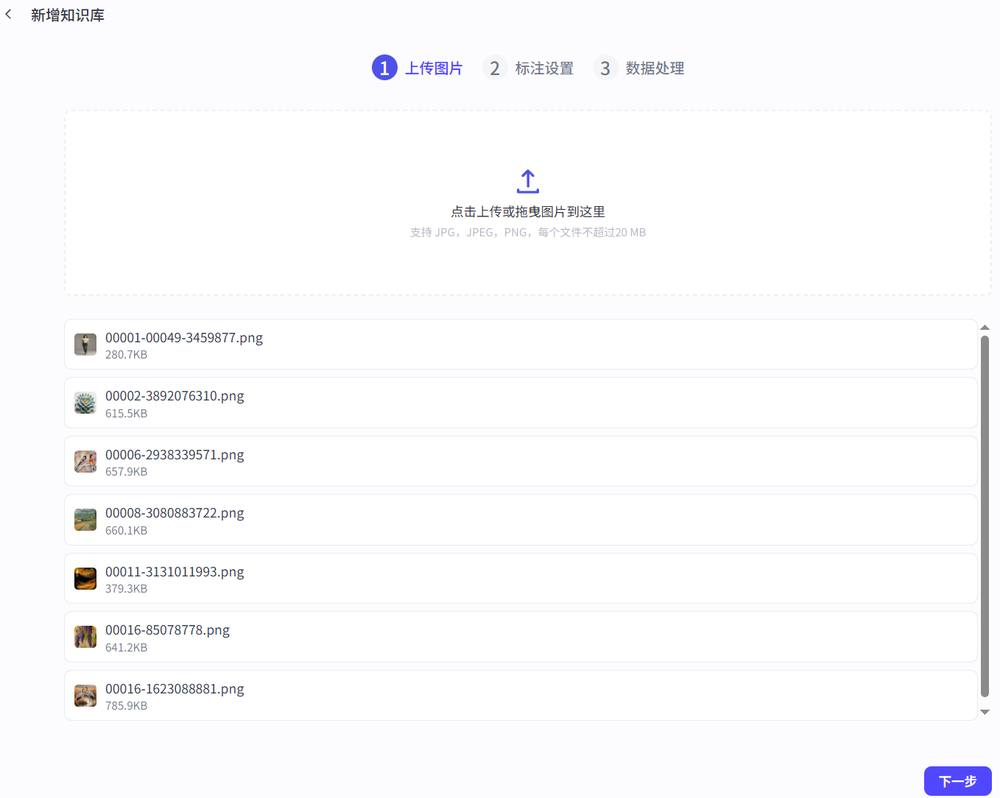
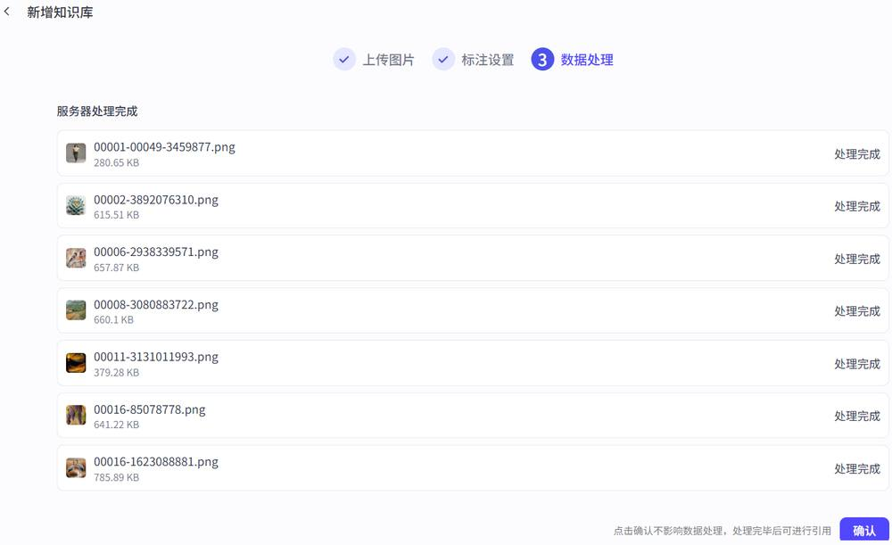
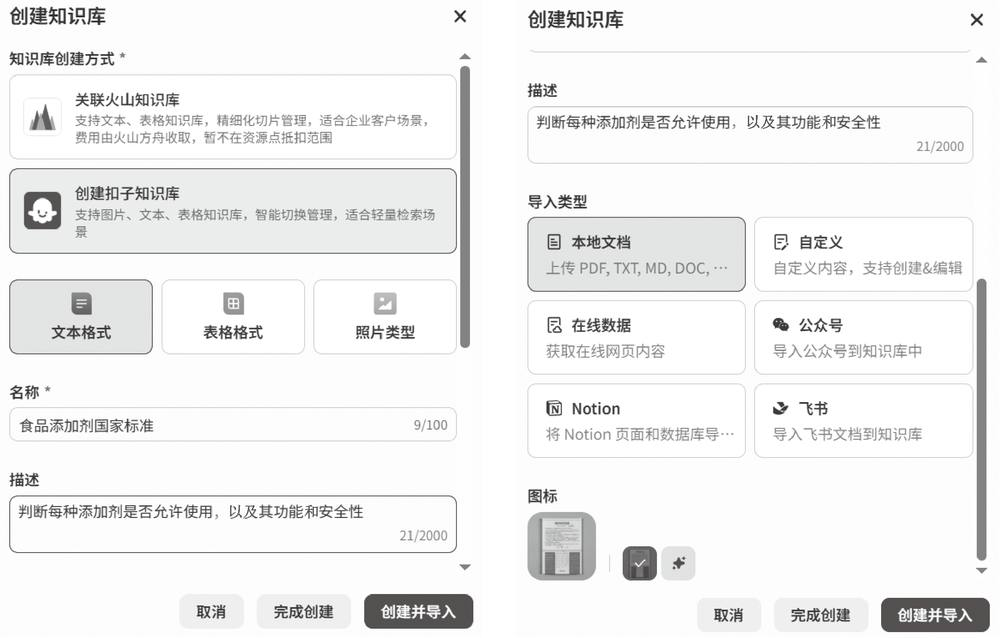
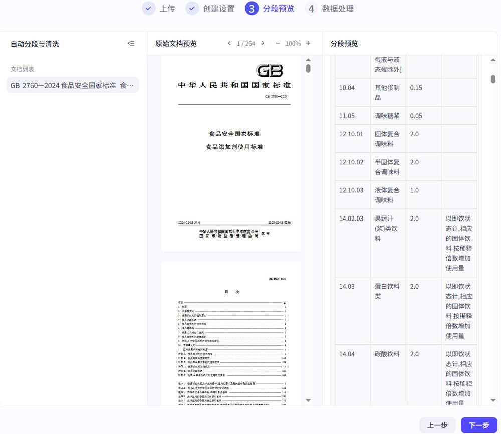
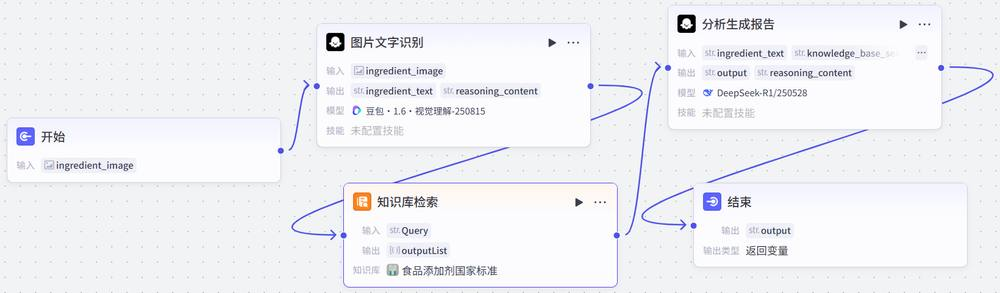
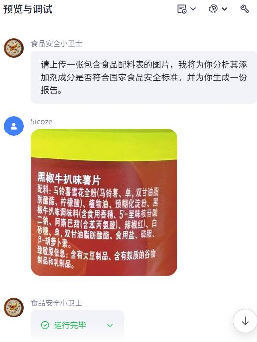
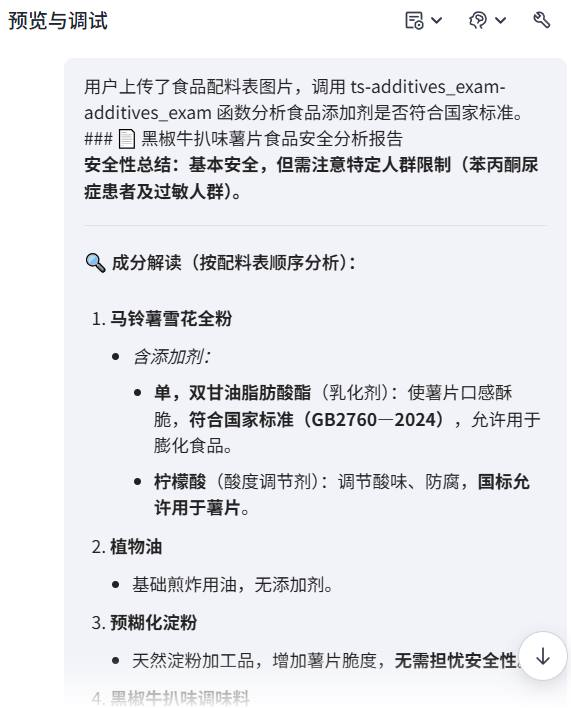
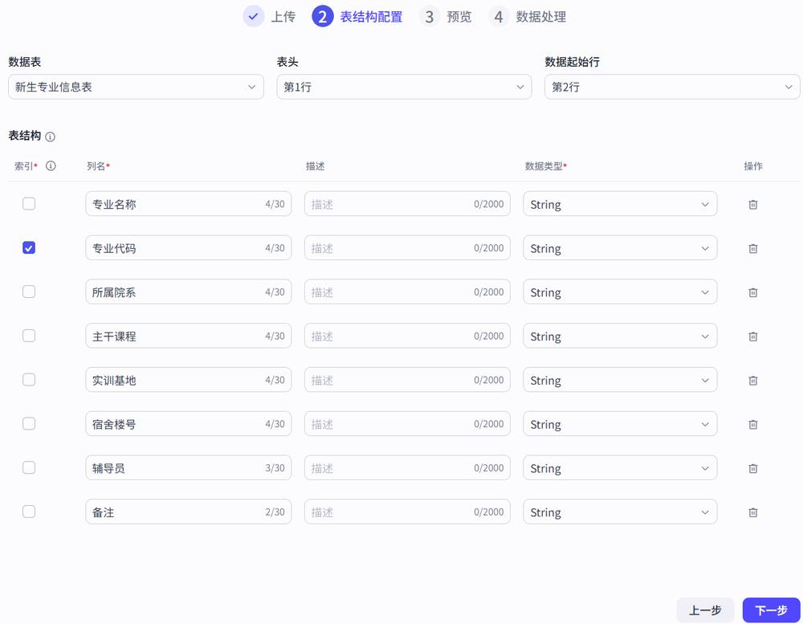
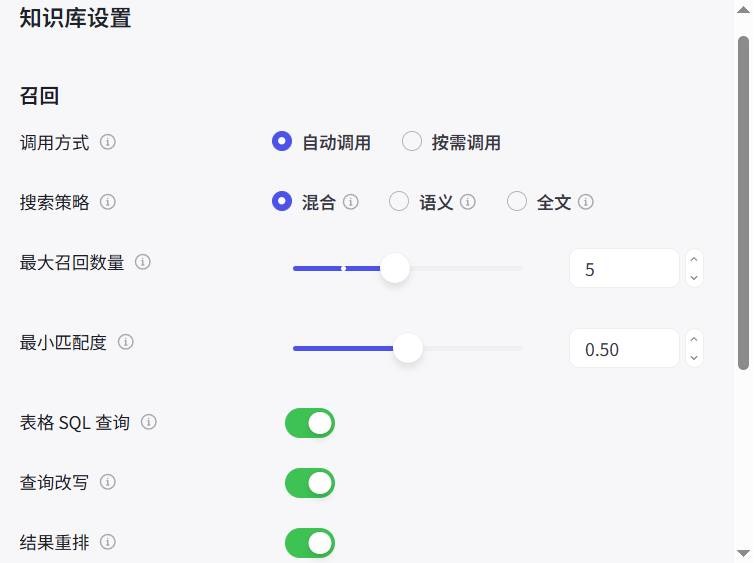
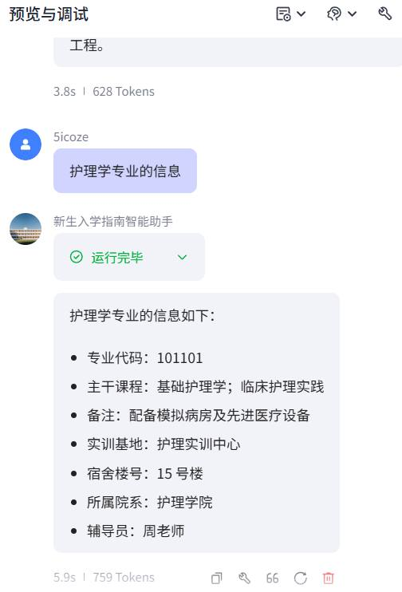

第 1 页 · 项目3
项目3
基于知识库打造精准、可靠的智能体
《智能体项目开发实战（扣子）（微课版）》
人民邮电出版社
工信精品人工智能系列教材
第 2 页 · 目录
目录
01
知识库与RAG基础
理解知识库概念、RAG工作流程及应用场景
02
使用知识库增加知识能力
掌握扣子知识库的创建、类型与操作流程
03
课后实践
通过实战任务巩固知识库应用技能
项目3 基于知识库打造精准、可靠的智能体
2 / 22
第 3 页 · 引入
引入
项目引入
通用大模型虽能对话，但常因知识滞后、事实错误或缺乏专业深度而难以应用于实际业务场景。本项目通过知识库和RAG技术，为智能体添加精准、专有的知识"底座"，使其从"通才"升级为"行业专家"。
三维教学目标
知识目标
• 了解知识库的概念与作用
• 理解检索增强生成（RAG）工作流程
• 了解知识库的类型与适用场景
能力目标
• 能够创建扣子知识库
• 掌握在智能体中使用知识库
• 掌握在工作流中使用知识库
素养目标
• 树立数据驱动决策的意识
• 培养人机协同思维
• 培养数据合规性意识
项目3 基于知识库打造精准、可靠的智能体
3 / 22
第 4 页 · 3.1
3.1
知识库与RAG基础
理解知识库的概念、RAG工作流程及其优势与应用场景，为智能体构建专业知识底座
第 5 页 · 3.1.1
3.1.1
智能体为什么需要知识库
弥补大模型的缺陷
赋予领域专业能力
动态学习与持续进化
支持复杂推理与可信交互
知识库赋能智能体的流程
用户提问
RAG检索
资料增强
精准回答
知识库如同智能体的"专业智库"，RAG则是激活知识的"动态处理流程"，两者协作弥补大模型在事实性、时效性和专业性上的不足
项目3 基于知识库打造精准、可靠的智能体
5 / 22
第 6 页 · 3.1.2
3.1.2
RAG工作流程
RAG通过与大模型能力结合，将知识库中的知识从被动存储转变为主动的问题解决工具
1
构建与索引
将文档通过文本分块技术切分成内容片段，使用Embedding模型转换为数值向量，存入向量数据库
2
检索
将用户问题转换为向量，在向量数据库中进行相似性检索，找出相关内容片段
3
增强
将检索到的内容片段与原始问题通过提示词模板拼接，形成增强后的新提示词
4
生成
大模型基于上下文生成最终回复
核心逻辑：RAG通过将强大的检索系统与大模型相结合，创造出一种"查证而后言"的AI生成模式。先检索、再增强、最后生成，确保回复的准确性和可靠性。
关键技术点
• 文本分块（Text Chunking）：每段500~1000字符 • Embedding模型：将文本转换为数值向量 • 向量数据库：存储和检索向量化的内容片段 • 相似性检索：基于向量相似度匹配相关内容
项目3 基于知识库打造精准、可靠的智能体
6 / 22
第 7 页 · 3.1.3
3.1.3
RAG的优势与应用
四大核心优势
知识实时性
减少幻觉
可解释性
领域适应性
主要应用场景
企业智能问答与知识管理
基于企业内部文档、Wiki、手册构建问答助手
智能客服机器人
结合产品知识库和FAQ提供精准一致的解答
内容生成与摘要
基于最新资讯自动生成新闻简报、市场分析报告
学术研究助手
连接论文库，帮助查询文献并生成综述
项目3 基于知识库打造精准、可靠的智能体
7 / 22
第 8 页 · 3.2
3.2
使用知识库为智能体增加知识能力
掌握扣子知识库的创建方法、三种类型、召回排序机制及完整操作流程
第 9 页 · 3.2.1
3.2.1
了解扣子编程的知识库
两大核心功能
数据管理与存储
增强检索
三大应用场景
语料补充
保存虚拟形象相关语料，模仿特定语言风格回答
客服场景
上传产品手册和FAQ，精准回答用户咨询
垂直场景
构建专业领域知识库，精准召回信息
扣子知识库 vs 火山知识库
| 对比项 | 扣子知识库 | 火山知识库 |
| 产品定位 | 轻量检索场景 | 企业级客户场景 |
| 操作难度 | 简单便捷，轻松上手 | 相对复杂繁琐 |
| 协作权限 | 暂不支持多人协作 | 支持火山引擎账号协作 |
项目3 基于知识库打造精准、可靠的智能体
9 / 22
第 10 页 · 3.2.2
3.2.2
扣子知识库的三种类型
| 对比项 | 文本类型 | 表格类型 | 图片类型 |
| 使用场景 | 基于内容片段检索和召回，适用于知识问答等场景 | 基于索引列匹配+NL2SQL查询和计算 | 基于标注信息匹配，适用于图片生成场景 |
| 导入方式 | 本地文件(TXT/PDF/DOC)、在线数据、飞书文档、自定义 | 本地文件(CSV/XLSX)、API、飞书表格、自定义 | 本地图片(JPG/PNG) |
| 内容分段 | 支持自动分段和手动分段 | 默认按行分片，一行一个片段 | 不涉及 |
| 索引 | 不涉及 | 支持设置索引字段，相似度匹配 | 支持设置图片标注信息 |
选择建议
• 非结构化文档（手册、报告）→ 文本类型 • 结构化数据（价格表、参数表）→ 表格类型 • 图片素材管理 → 图片类型
项目3 基于知识库打造精准、可靠的智能体
10 / 22
第 11 页 · 3.2.3
3.2.3
召回和排序
召回（Recall）和排序（Ranking）是RAG检索阶段的两个核心环节
召回 Recall
负责"查全"
• 利用语义向量搜索、全文检索及关键词匹配
• 从知识库中快速初筛出大量可能相关的候选文档
• 使用快速、粗略的匹配算法进行初步筛选
• 目标：尽可能多地找到所有可能相关的文档
排序 Ranking
负责"查准"
• 使用更精细的排序模型对召回结果进行重排
• 从相关性、权威性、时效性等维度筛选
• 使用复杂的重排模型进行精细排序
• 目标：筛选出最相关、最优质的候选文档
召回和排序前后衔接，共同确保输入大模型的信息既全面又精准，这是构建高质量RAG的关键
用户提问 → 召回（查全） → 候选文档集合 → 排序（查准） → 最优文档 → 大模型生成回复
项目3 基于知识库打造精准、可靠的智能体
11 / 22
第 12 页 · 3.2.4
3.2.4
知识库操作流程
1
创建知识库
• 扣子知识库：导入文本/表格/图片
• 火山知识库：关联火山引擎知识库
• 选择类型、上传内容、配置分段
2
使用知识库
• 直接与智能体关联响应问题
• 在工作流中添加知识库节点
• 无须发布即可使用
3
配置检索召回
• 设置搜索策略（混合/语义/全文）
• 配置最大召回数量
• 设置最小匹配度阈值
4
调试
• 测试回复效果
• 优化分段策略
• 调整召回参数
关键提示：召回内容的完整度和相关度越高，大模型生成回复的准确性和可用性也就越高。需要通过不断调试来优化效果。
两种使用方式对比
直接关联智能体
知识库直接与智能体关联，自动响应用户问题，简单快捷
工作流中使用
通过知识库节点灵活控制检索时机和方式，适合复杂场景
项目3 基于知识库打造精准、可靠的智能体
12 / 22
第 13 页 · 同步训练
同步训练
创建和管理图片知识库
核心任务：创建图片知识库并上传本地图片，让智能体"看见"并理解图片内容
1 准备图片素材
2 登录扣子编程，切换到"资源库"页面
3 选择"资源"→"知识库"→"创建扣子知识库"
4 选择"照片类型"，设置名称和导入类型
5 上传图片（支持批量上传）
6 选择标注方式：智能标注 / 人工标注
7 等待数据处理完成
8 进入知识库编辑页面管理图片
9 编辑图片描述信息
10 添加更多图片（支持不同标注方式）
项目3 基于知识库打造精准、可靠的智能体
13 / 22
同步训练3-1

第 14 页 · 同步训练
同步训练
创建和管理图片知识库
核心任务：创建图片知识库并上传本地图片，让智能体"看见"并理解图片内容
1 准备图片素材
2 登录扣子编程，切换到"资源库"页面
3 选择"资源"→"知识库"→"创建扣子知识库"
4 选择"照片类型"，设置名称和导入类型
5 上传图片（支持批量上传）
6 选择标注方式：智能标注 / 人工标注
7 等待数据处理完成
8 进入知识库编辑页面管理图片
9 编辑图片描述信息
10 添加更多图片（支持不同标注方式）
项目3 基于知识库打造精准、可靠的智能体
13 / 22
同步训练3-1

第 15 页 · 同步训练
同步训练
创建和管理图片知识库
核心任务：创建图片知识库并上传本地图片，让智能体"看见"并理解图片内容
1 准备图片素材
2 登录扣子编程，切换到"资源库"页面
3 选择"资源"→"知识库"→"创建扣子知识库"
4 选择"照片类型"，设置名称和导入类型
5 上传图片（支持批量上传）
6 选择标注方式：智能标注 / 人工标注
7 等待数据处理完成
8 进入知识库编辑页面管理图片
9 编辑图片描述信息
10 添加更多图片（支持不同标注方式）
项目3 基于知识库打造精准、可靠的智能体
13 / 22
同步训练3-1
第 16 页 · 同步训练
同步训练
创建和管理图片知识库
核心任务：创建图片知识库并上传本地图片，让智能体"看见"并理解图片内容
1 准备图片素材
2 登录扣子编程，切换到"资源库"页面
3 选择"资源"→"知识库"→"创建扣子知识库"
4 选择"照片类型"，设置名称和导入类型
5 上传图片（支持批量上传）
6 选择标注方式：智能标注 / 人工标注
7 等待数据处理完成
8 进入知识库编辑页面管理图片
9 编辑图片描述信息
10 添加更多图片（支持不同标注方式）
项目3 基于知识库打造精准、可靠的智能体
13 / 22
同步训练3-1
第 17 页 · 同步训练
同步训练
创建和管理图片知识库
核心任务：创建图片知识库并上传本地图片，让智能体"看见"并理解图片内容
1 准备图片素材
2 登录扣子编程，切换到"资源库"页面
3 选择"资源"→"知识库"→"创建扣子知识库"
4 选择"照片类型"，设置名称和导入类型
5 上传图片（支持批量上传）
6 选择标注方式：智能标注 / 人工标注
7 等待数据处理完成
8 进入知识库编辑页面管理图片
9 编辑图片描述信息
10 添加更多图片（支持不同标注方式）
关键要点
智能标注
AI自动生成对图片内容的全面描述，适合通用场景
人工标注
手动输入精准描述，适合专业性强的图片
最佳实践
高质量图片标注是关键！专业图片建议辅以人工标注，确保智能体准确检索
注意事项
• 数据处理完成前不可引用
• 数据较多可先确认，后台继续处理
项目3 基于知识库打造精准、可靠的智能体
13 / 22
同步训练3-1
第 18 页 · 同步训练
同步训练
在智能体中使用知识库
操作步骤
1 创建测试智能体
2 在"知识"区域添加知识库
3 配置召回设置（调用方式、搜索策略等）
4 编写提示词引导智能体使用知识库
5 测试验证效果
知识库核心设置项
| 配置项 | 说明 |
| 调用方式 | 自动调用 / 按需调用 |
| 搜索策略 | 混合 / 语义 / 全文 |
| 最大召回数量 | 返回内容片段数量（默认5） |
| 最小匹配度 | 匹配度阈值（默认0.50） |
| 查询改写 | 根据上下文优化查询 |
提示词编写要点
• 声明角色：明确智能体的专业定位
• 核心规则：当用户提问与知识库相关时，优先从知识库寻找答案
• 有据可依：回答需明确告知基于哪张图片或文档
• 边界处理：超出知识库范围时，明确说明并尝试用通用知识回答
项目3 基于知识库打造精准、可靠的智能体
14 / 22
同步训练3-2
第 19 页 · 案例实战
案例实战
食品安全小卫士
场景痛点：消费者对食品配料表中的添加剂感到困惑，通用大模型知识可能滞后
解决方案：创建"食品安全小卫士"智能体，用户上传配料表图片，智能体依据国家标准GB 2760-2024自动判断添加剂安全性
输出报告内容
安全性结论
判断每种添加剂是否允许使用
成分解读
说明添加剂功能和安全性
个性化建议
提供通俗易懂的选购建议
技术架构
用户上传图片
图片文字识别
知识库检索
生成分析报告
涉及三大模块协同：知识库（GB 2760-2024标准）+ 工作流（图片识别→检索→分析）+ 大模型（生成报告）
项目3 基于知识库打造精准、可靠的智能体
15 / 22
案例实战3-1
第 20 页 · 案例实战
案例实战
知识来源：从官方渠道获取《食品安全国家标准 食品添加剂使用标准》（GB 2760-2024）PDF文件
创建步骤
1
登录资源库
选择"资源"→"知识库"
2
创建扣子知识库
选择"文本格式"
项目3 基于知识库打造精准、可靠的智能体
16 / 22
食品安全小卫士——创建知识库
案例实战3-1

3
设置基本信息
名称、描述、导入类型
第 21 页 · 案例实战
案例实战
知识来源：从官方渠道获取《食品安全国家标准 食品添加剂使用标准》（GB 2760-2024）PDF文件
创建步骤
后续流程：上传PDF → 创建设置 → 分段预览 → 数据处理 → 进入知识库编辑页面 → 可继续添加更多文档
项目3 基于知识库打造精准、可靠的智能体
16 / 22
食品安全小卫士——创建知识库
案例实战3-1
第 22 页 · 案例实战
案例实战
知识来源：从官方渠道获取《食品安全国家标准 食品添加剂使用标准》（GB 2760-2024）PDF文件
创建步骤
后续流程：上传PDF → 创建设置 → 分段预览 → 数据处理 → 进入知识库编辑页面 → 可继续添加更多文档
项目3 基于知识库打造精准、可靠的智能体
16 / 22
食品安全小卫士——创建知识库
案例实战3-1

第 23 页 · 案例实战
案例实战
知识来源：从官方渠道获取《食品安全国家标准 食品添加剂使用标准》（GB 2760-2024）PDF文件
创建步骤
后续流程：上传PDF → 创建设置 → 分段预览 → 数据处理 → 进入知识库编辑页面 → 可继续添加更多文档
项目3 基于知识库打造精准、可靠的智能体
16 / 22
食品安全小卫士——创建知识库
案例实战3-1
第 24 页 · 开始节点
开始节点
输入变量：
ingredient_image
类型：Image
接收用户上传的配料表图片
图片文字识别
模型：豆包·视觉理解
功能：识别图片中
的所有文字内容
输出：ingredient_text
知识库检索
知识库：食品添加
剂国家标准
Query：识别出的文本
搜索策略：混合检索
分析生成报告
模型：
DeepSeek-R1
生成安全
性分析报告
关键设计：工作流实现了从"图片→文字→检索→分析→报告"的完整自动化流程。知识库检索节点的Query使用图片识别结果，让模型自动提取关键内容并在知识库中搜索。
项目3 基于知识库打造精准、可靠的智能体
17 / 22

食品安全小卫士——创建工作流
案例实战3-1
第 25 页 · 1 新建智能体"食品安全小卫士"
1 新建智能体"食品安全小卫士"
2 功能介绍：根据国家标准分析食品配料表
3 在"技能"区域添加工作流 additives_exam
4 编写人设与回复逻辑提示词
5 配置开场白引导用户上传图片
6 上传配料表图片进行测试
提示词核心要点
• 角色：专业食品安全分析师
• 核心规则：收到图片后调用工作流处理
• 输出要求：呈现工作流分析结果
• 限制条件：不回答与食品安全无关的问题
• 异常处理：工作流无输出时提示用户重试
项目3 基于知识库打造精准、可靠的智能体
18 / 22
食品安全小卫士——创建智能体
案例实战3-1
第 26 页 · 测试验证结果
测试验证结果
文字识别准确
知识库检索专业
报告生成易懂
核心结论：知识库的质量和提示词的清晰度是智能体成功的关键。本案例展示了知识库、工作流、大模型协同工作的方法。
项目3 基于知识库打造精准、可靠的智能体
18 / 22
食品安全小卫士——创建智能体
案例实战3-1


第 27 页 · 新生入学指南智能助手
新生入学指南智能助手
场景：在智能体中直接使用表格知识库，将结构化数据转化为实用回答
数据：Excel文件包含专业名称、代码、院系、主干课程、实训基地、宿舍楼号、辅导员等字段
表格知识库三大优势
结构规整
信息按字段存储，易于维护和批量更新
查询精准
像数据库一样条件过滤，避免模糊查找
易于扩展
新增信息只需在表格中增加一行数据
查询原理
用户提问 → RAG将问题转换为查询指令 → 在表格知识库中检索"专业名称"字段 → 匹配到目标记录 → 将对应字段（如"主干课程"）的内容作为上下文返回 → 大模型生成最终回复
示例：用户问"软件工程有哪些主干课程？"→ 检索"专业名称"="软件工程" → 返回"主干课程"字段内容
项目3 基于知识库打造精准、可靠的智能体
19 / 22
案例实战3-2
第 28 页 · 案例实战
案例实战
创建表格知识库
1 切换到资源库 → "资源"→"知识库"
2 选择"创建扣子知识库"→"表格格式"
3 设置名称：新生专业信息库
4 上传Excel文件
5 表结构配置：勾选"专业代码"为索引
6 数据处理完成
项目3 基于知识库打造精准、可靠的智能体
20 / 22
新生入学指南智能助手——创建知识库
案例实战3-2

第 29 页 · 案例实战
案例实战
创建智能体
1 创建"新生入学指南智能助手"
2 在"知识"区域添加表格知识库
3 配置召回设置（保持默认）
4 编写精准查询提示词
5 配置开场白
6 测试验证效果
提示词关键规则
精准查询：用户询问特定专业时，必须在知识库中检索"专业名称"相关记录
字段对应：问课程→回答"主干课程"字段；问宿舍→回答"宿舍楼号"字段；问院系→回答"所属院系"字段
严谨措辞：检索不到时明确告知"未找到相关信息，请核实专业名称"
禁止臆断：回答必须完全基于表格数据，不得编造表格之外的信息
项目3 基于知识库打造精准、可靠的智能体
20 / 22
新生入学指南智能助手——在智能体中使用知识库
案例实战3-2

第 30 页 · 案例实战
案例实战
创建智能体
1 创建"新生入学指南智能助手"
2 在"知识"区域添加表格知识库
3 配置召回设置（保持默认）
4 编写精准查询提示词
5 配置开场白
6 测试验证效果
项目3 基于知识库打造精准、可靠的智能体
20 / 22
新生入学指南智能助手——在智能体中使用知识库
案例实战3-2

第 31 页 · 3.3
3.3
课后实践
1
校园生活助手
准备学生手册，创建文本知识库，创建智能体解答校园日常问题
2
调整召回参数实验
调整"最大召回数量"和"最小匹配度"，观察同一问题的检索结果差异
3
控糖饮食助手
基于食物GI数据创建知识库，为用户提供血糖健康管理咨询
4
知识库维护操作
练习编辑、停用、启用、删除知识库，以及添加和删除文件
实践提示
• 控糖饮食助手的提示词建议："你是一个专注于血糖健康管理的饮食助手，严格依据GI知识库的数据提供建议。对于知识库内的问题，确保答案准确并注明数据来源；对于知识库外的咨询，应基于通用营养学知识谨慎回答，并提示用户信息局限性。"
• 所有实践任务完成后，建议对比不同知识库类型（文本/表格）的检索效果差异
项目3 基于知识库打造精准、可靠的智能体
21 / 22
第 32 页 · 项目3 总结
项目3 总结
基于知识库打造精准、可靠的智能体
知识库与RAG
扣子知识库
同步训练
案例实战
核心要点：知识库的质量 + 提示词的清晰度 = 智能体成功的关键
《智能体项目开发实战（扣子）（微课版）》
人民邮电出版社